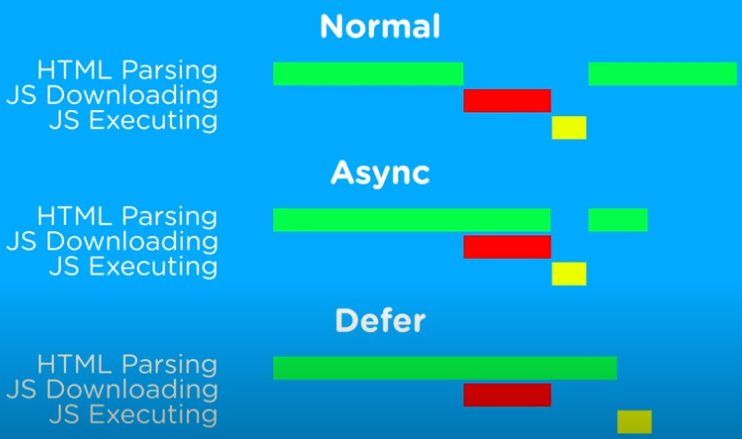
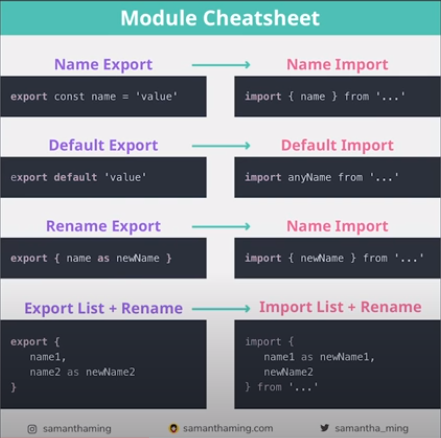
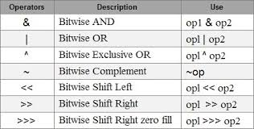

Home Pages:
Informations included in this page:
parseInt and parseFloat global methods
JavaScript async and defer attributes
parseInt and parseFloat global methods
JavaScript async and defer attributes
Hello, in this lesson I'm gonna talk again about iterators and also I'm gonna talk about generators. So, lets get started.
Arrays, Strings, Maps, Sets, NodeLists, etc, all have built-in iterators that allow you to iterate through them easily. Objects however do not have a built-in iterator, if you try to iterate through an object using for...of loop it will return an error, saying object is not iterable, in order to iterate through the object you have to build an iterator for it that can step through it's properties and return these first.
Generators make iterators easier to use, while they also allow us to play with the order we get things back, in simple words, generators give us better control over iterators.
Let's now create a generator and use it to return the elements of an array:
JavaScript Code:
let arr = [1,2,3] function* generator(){ yield arr[0]; yield arr[1]; yield arr[2]; } let iterator = generator(); document.write(`${iterator.next().value} <br> ${iterator.next().value} <br> ${iterator.next().value} <br> ${iterator.next().value}`);
Outcome:
Alright, let me explain now, by writing function* I let JavaScript know that the function is a generator, I then use yield keyword to return stuff, then using the next() method I return the { value: <value>, done : <boolean> } object I spoke about before in the lesson about iterators I made at page 19 of my notes, this method iterates through the stuff I yield one by one, just like how it works when I use it on iterators.
Let's get back to iterators now, as I said before, to iterate through an object you first need to create it an iterator, we can do this like this:
JavaScript Code:
let human = { name: "Alex", age: 16, gender: "male" } let count = -1; let iterable = { [Symbol.iterator]: function(){ return{ next: () => { count++; switch(count){ case 0: return { value: human.age, done: false } case 1: return { value: human.gender, done: false } case 2: return { value: human.name, done: false } default: return{ value: undefined, done: true } } } } } } let itr = iterable[Symbol.iterator](); document.write(`${itr.next().value} <br> ${itr.next().value} <br> ${itr.next().value} <br> ${itr.next().value}`)
Outcome:
And this women and gentlemen is what an itrator looks like. Let me explain, iterable is an object, which has a method called [Symbol.iterator], I explaiend in previous lessons that we use [] in property names to make a name using an expression, the Symbol.iterator is basically a unique value that will never be duplicated, to understand it better you should learn about symbols, just like boolean, strings and numbers JavaScript also has something called Symbols, but I will talk more about this later, anyway, after this method is called an object is returned, with one method called next, and every time this method is called the count numbers gets +1, then using the switch syntax I placed the object property values in the order I want them to be returned and done, we now have an iterator of the human object,
Do I have to write this whole thing for every single object I make? Of course not, if I wanted to, I could write the iterator like this to make it more flexible, and this way we could use the same iterator for many objects, only requirement is that the objects should be similar and share the same property names:
JavaScript Code:
let human = { name: "Alex", age: 16, gender: "male" } let count = -1; let iterable = { [Symbol.iterator]: function(x){ return{ next: () => { count++; switch(count){ case 0: return { value: x.age, done: false } case 1: return { value: x.gender, done: false } case 2: return { value: x.name, done: false } default: return{ value: undefined, done: true } } } } } } let itr = iterable[Symbol.iterator](human); document.write(`${itr.next().value} <br> ${itr.next().value} <br> ${itr.next().value} <br> ${itr.next().value}`)
Outcome:
The same thing could also be written using generators to make code easier to use and read:
JavaScript Code:
let human = { name: "Alex", age: 16, gender: "male" } let count = -1; let iterable = { [Symbol.iterator]: function* (x){ yield x.age; yield x.gender; yield x.name; } } let itr = iterable[Symbol.iterator](human); document.write(`${itr.next().value} <br> ${itr.next().value} <br> ${itr.next().value} <br> ${itr.next().value}`)
Outcome:
Arrays, strings, etc already have built-in iterators as I said before, which is the reason we can iterate through their content with for...of loop, see below how an array iterator looks like:
JavaScript Code:
let array = { [Symbol.iterator]: function* (){ yield 1; yield 2; yield 3; } } for(let i of array){ document.write(i); }
Outcome:
What does for...of loop do anyway? It simple iterates through the values of the objects that are returned by array[Symbol.iterate]().next() method. If I wanted to I could do it myself without using any loop:
JavaScript Code:
let array = { [Symbol.iterator]: function* (){ yield 1; yield 2; yield 3; } } let itr = array[Symbol.iterator](); document.write(`${itr.next().value} <br> ${itr.next().value} <br> ${itr.next().value} <br> ${itr.next().value}`);
Outcome:
Let's now try the same using a real array to prove the built-in iterator does exist:
JavaScript Code:
let array = [1,2,3] let itr = array[Symbol.iterator](); document.write(`${itr.next().value} <br> ${itr.next().value} <br> ${itr.next().value} <br> ${itr.next().value}`);
Outcome:
Before, when I spoke about iterators and generators we used Symbol.iterator as a property of our costum iterators. But what exactly are symbols? That's what I'm gonna go through today, so let's get started.
Before ES6, JavaScript had five promitive data types, number, string, boolean, null and undefined, after ES6 however another primitive data type was added called Symbol.
Symbol was added so that things like objects could be iterated over, symbols are unique values that can be generated.
Every symbol value returned from Symbol() is unique. The main porpuse of Symbol data type is to use symbol values as identifiers for object properties.
Let's crete three symbols now to start experimenting:
JavaScript Code:
let example1 = Symbol(); let example2 = Symbol(123); let example3 = Symbol("Alex");
Outcome:
Inside the brackets you can add a description, this description does not have any functional effect on the symbol however, they are simply made for debugging porpuses, so that you can write a description of what each symbol is supposed to be .
As I said before, a symbol can be imagined as like a container that contains a unique value inside it, to prove each symbol is unique I can simply try to compare them:
JavaScript Code:
document.write( Symbol(123) == Symbol(123) );
Outcome:
Let's talk about some methods you can use, before I said that whatever you write inside the brackets is simple a description that does nothing, but when used with the for method, this "description" works as like a key, meaning, you can later reference to that specific symbol using it, like in the example below:
JavaScript Code:
document.write( Symbol.for(123) == Symbol.for(123) );
Outcome:
So, when JavaScript reads Symbol.for(123) it searches for a symbol that has the 123 key, and if it doesn't find it, then it creates a symbol with this key, careful tho, 123 is only treated as a key when created with Symbol.for(123), trying doing it like this won't work:
JavaScript Code:
document.write( Symbol(123) == Symbol.for(123) );
Outcome:
The first 123 is treated as a description, while the second symbol creates a new symbol with 123 as it's key.
Another method I wanna talk about is the keyFor method:
JavaScript Code:
let example = Symbol.for(123); let example2 = Symbol(123); document.write( `${Symbol.keyFor(example)} ${Symbol.keyFor(example2)}` )
Outcome:
As you can see, keyFor method returns the key of a chosen symbol, example2 didn't have a key so undefined was returned.
Now, let's see how symbols work when used in objects:
JavaScript Code:
let object = { prop1: "value1", [Symbol()]: "value2", [Symbol()]: "value3", prop4: "value4", prop5: "value5", } for(let i in object){ document.write(`${i}: ${object[i]} <br>`); }
Outcome:
As you can see, the for...in loop does not include any property inside an object if the key is a symbol.
So yeah, that's some little stuff about symbols, they are most commonly used to create costum iterators like I did in the previous lesson, and they are intended to be used as object properties, that's their porpuse, I may learn more about symbols in the future, for now however just knowing they exist, and having a basic knowledge about what they are is enough for me.
Here is a video that helped me, it's pretty small, and the guy in the video explains what I just explained but better, so give it a try if you want to:
Before I start explaining the methods, it's important to know what an integer and a float is, an integer is a number such as 123, while a float is a number such as 1.5.
The parseInt() function parses a string or a float number and returns it as an integer:
JavaScript Code:
let a = parseInt("123") + "<br>"; let b = parseInt("023 lalala 1") + "<br>"; let c = parseInt(14.5) + "<br>"; let d = parseInt("I'm 15 years old") + "<br>"; let e = parseInt("13.5") + "<br>"; let f = parseInt(" 60 ") + "<br>"; let g = parseInt("34 45 60") + "<br>"; document.write(a + b + c + d + e + f + g);
Outcome:
As you can see, JavaScript starts reading the number inside the string and finishes whenever it meets a space break or a dot, then it returns the number, if the number is not at the start of the string then NaN will be returned, however, if the first characters in the string are space bars and the number is followed, then it ignores the space bars and reads the number.
The parseInt() can also take a second parameter named radix parameter, this parameter is used to specify which numeral system to be used, for example, if you write 16, then the string is parsed from a hexademical number to a demical number, to understand the parameter better watch the first 11 minutes of this video, it explains the different numeral systems that exist and how you can convert a decimal number to each of these:
JavaScript Code:
let a = parseInt("101011100", 2) + "<br>"; // converts from Binary to Demical let b = parseInt("534", 8) + "<br>"; // converts from Octal to Demical let c = parseInt("15C", 16) + "<br>"; // converts from Hexademical to Demical document.write(a + b + c);
Outcome:
Now, there are few things you need to know, if a string begins with "0x", the radix is automatically considered to be 16 (hexademical), and for older browsers, if a string starts with 0 then the radix is automatically considered to be 8 (Octal), for most browsers however the default is 10, just to be 100% sure however that for all browsers it works the same, if you are converting a string that starts with 0 to a number do it like this: parseInt("010", 10);
About parseFloat() method now, it works the exact same way, with two differences, firstly, it allows float numbers, and secondly, it doesn't take a radix parameter, since (forgive me if I'm wrong but) I don't believe any numeral system uses float numbers.
The reduce() method is similar to map() method in a way, it however takes a function with two parameters instead of one, and that's because while map() method performs a specific action to all of the array elements, the reduce() method takes all the array elements and creates one sinlge result.
For example, if I wanted to take the sum of all the array items I could do something like this:
JavaScript Code:
let arr = [2, 3, 2, 3]; let sum = 0; for(let i of arr){ sum += i; } document.write(sum);
Outcome:
The same thing could be written using reduce() method, like this:
JavaScript Code:
let arr = [2, 3, 2, 3]; let sum = arr.reduce((passedIn, item) => { return passedIn += item}, 0) document.write(sum);
Outcome:
So, let me do the explainingnow, item parameter is assigned the array items one by one in order, the passedIn parameter is assigned whatever was returned in the previous run, or if it's the first run, then it is assigned whatever you add for the second parameter of the reduce() method, I added zero, so passedIn starts as 0, then becomes 2, and so on. Here is an example to help you understand:
JavaScript Code:
let arr = [2, 3, 2, 3]; let sum = arr.reduce((passedIn, item) => { document.write(`${passedIn} + ${item} = ${passedIn + item} <br>`) return passedIn += item; }, 0) document.write(`The final result is ${sum}`);
Outcome:
See what happens if you don't add a second parameter in the reduce() method:
JavaScript Code:
let arr = [2, 3, 2, 3]; let sum = arr.reduce((passedIn, item) => { document.write(`${passedIn} + ${item} = ${passedIn + item} <br>`) return passedIn += item; }) document.write(`The final result is ${sum}`);
Outcome:
As you can see, the passedIn parameter was firstly assigned the value of the first item of the array and the item parameter was assigned the value of the second item of the array, everything after that worked as expected.
I want to make one last example, in this example we will be comparing strings, if you didn't know when you compare two strings, if one string starts with A and the other with B then the one that starts with B is greater than the one that starts with A, if both start with A then their second letter is compared, if again the same then the third letter and so on, taking advantage of this I'm gonna make a simple code that will look into an array of my favorite anime shows and return me to first alphabetically title:
JavaScript Code:
let animes = ["Noragami", "FullMetal Alchemist Brotherhood", "DeathNote", "Code Geass", "Steins;Gate", "Death Parade", "Monster", "Devilman Crybaby", "Dr Stone", "JoJo", "Tanya the evil", "Kill La Kill", "Blood of Zeus", "Sword Art Online", "Attack on Titans", "Parasyte", "Beyblade", "Pokemon", "Blue Exorcist", "Soul Eater", "Castelvania", "Kakegurui"]; let first = animes.reduce((passedIn, item) => { document.write(`${passedIn} to ${item} <br>`); if(item < passedIn){ return item; } else { return passedIn }; }); document.write(`<br> Final result: ${first}`);
Outcome:
In this section I will talk about two HTML attribtues used inside the <script> tag and how they effect they way JavaScript is loaded into the page.
First, let me explain how HTML is parsed, as you probably know, an HTML document is rendered from the top to the bottom, whenever a source is met, such as an image or a video, it has to be downloaded, however, the HTML doesn't stop loading to wait for the source to be downlaoded, it continues loading normally while the source is downloading at the same time at the background.
Whenever a <script> element with a src attribute is met however, by default HTML waits for JavaScript to download, then execute and only after it continues loading. That's the reason you see so many people adding their <script> elements at the bottom of the page.
As you can see in the image above, if the async attribute is added to the <script> element, then the downloading of the JavaScript file happens at the background while HTML is still loading, and then after it's done HTML stops parsing and waits for JavaScript to execute before it continues the parsing.
When defer atrribute is used, JavaScript file is downloaded at the background, and only executes after HTML has finished loading.
To better educate your self about these two attributes, I recommend watching the following video, don't forget to subscribe to the guy, his videos have helped me a lot in my journey, he always explains things in a simple to undertstand way, and his videos are pretty short too, he is my favorite teacher so far, because ha makes the web simplified for people like me who are beginners.
Another great feauture that was added with ES6 are modules which allow us to export code from other JavaScript files and import it in other files.
Let's talk about how to export code first, there are two ways to do that, you can either do it like this:
JavaScript Code:
function example(){ document.write("idk") } var x = 1; export { example, x }
Or, you could do this like that:
JavaScript Code:
export function example(){ document.write("idk") } export var x = 1;
You can also use the export default keyword to export the default code of the file, I don't really know if the default code is treated differently or something, from what I saw it works pretty much the same way export works, with one exception, you can only export one thing as default, the syntax looks like this:
JavaScript Code:
function example(){ document.write("idk") } export default example Could also be written like this: export default function example(){ document.write("idk") }
How do we import code now from one JavaScript file to another? Firstly, you should make sure the script element you are writing in has the type="module" attribute or else it won't work, then, you do import the code like this:
Notes20.html file code:
<script type="module"> import human, {getName, getAge} from './module.js' let person = new human("Alex", 15); getName(person); getAge(person); </script> <div id="idkdude">
module.js file code:
export default class User{ constructor(n,a){ this.name = n; this.age = a; } } export function getName(user){ document.getElementById("idkdude").innerHTML += user.name; } export function getAge(user){ document.getElementById("idkdude").innerHTML += user.age; }
Outcome:
Alright, before I continue, I wanna mention that it took me quite some time to create the example above, and that's because I faced few problems, first problem I faced was that for some reason the modules wouldn't work when I opened the page, and from what I understood, the reason that happened was because of some kind of cors policy or something, to fix that I had to open the page online with a server so it has a normal url, because however updating the server every single time I make a change would be tiring I downloaded a google chrome extension that hosts a local server for me and with this the problem was solved. Another problem I faced was that document.write wouldn't work, I didn't know that but it seems that while using modules the script works asynchronously, I guess it's because it has to load code from other files, anyway, because of that, document.write wouldn't work after the page had loaded when the code was executed so I had to create a container for it and use innerHTML to edit the DOM.
Anyway, to continue, take a look to this amazing cheatseet made by samanthaming, it contains all the different kind of ways you can export and import code:
As you can see, you can use the as keyword to rename, this can be done either while exporting or even while importing.
Lastly, youcan use * as name to target everything, and then import the code like this:
Notes20.html file code:
<script type="module"> import* as module2 from './module2.js' let person2 = new module2.User2("Christina", 18); module2.getName2(person2); module2.getAge2(person2); </script> <div id="emptydiv">
module2.js file code:
export class User2{ constructor(n,a){ this.name = n; this.age = a; } } export function getName2(user){ document.getElementById("emptydiv").innerHTML += user.name; } export function getAge2(user){ document.getElementById("emptydiv").innerHTML += user.age; }
Outcome:
The find() method returns the value of the first element in an array that passes a chosen test, it's similar to how filter() works, but it only returns the first element to pass the test.
JavaScript Code:
let arr = [1, 2, 3, 4]; document.write(arr.find(x => x > 2));
Outcome:
If no element passes the test undefined is returned, and that's actually everything there is about this cool method.
The findIndex() method works the same way find() method works, however, instead of returning the value of the element that passed the test first it return the index of the element, for example, let's say the second item passed the test, then findIndex() method would return 1 (since we start counting from 0).
JavaScript Code:
let arr = [1, 2, 3, 4]; document.write(arr.findIndex(x => x > 2));
Outcome:
As you can see 2 was returned, and that's because our third item passed the test first, since 3 > 2, and the index number of the third item of an array is 2 (since we start counting from 0).
Prior to ES6 if we wanted to repeat a string there were plenty of little tricks we could use to achieve this, for example, we could do something like this:
JavaScript Code:
document.write(Array(4).join("foo"));
Outcome:
What does the code do? Array(4) creates an array with 4 empty elements, then join method merges the elements into one string using foo as seperation, that's why we only get three foo.
ES6 introduce a new method called repeat that lets us repeat a string easier like this:
JavaScript Code:
document.write("foo".repeat(3));
Outcome:
The one and only parameter it takes specifies how many times we want the string to be repeated.
Prior to ES6 if we find the position of a text inside a string we only used the indexOf() method, I have talked about this method is a previous lesson.
ES6 has replaced this with a version that has cleaner and more simplified syntax, now you can search strings using the following methods:
JavaScript Code:
let string = "JavaScript"; let one = string.startsWith("Ja"); let two = ", " + string.startsWith("Scr", 4); let three = ", " + string.endsWith("ipt"); let four = ", " + string.endsWith("va", 4); let five = ", " + string.includes("rip"); let six = ", " + string.includes("ava", 4); document.write(one, two, three, four, five, six);
Outcome:
JavaScript does not have any print object or print methods, you cannot output devices from JavaScript. The only exception is that you can call the window.print() method in the browser to print the content of the current window.
Code:
<button id="print">Click <script> document.getElementById("print").addEventListener("click", () => window.print());
Outcome:
However, since window is the global object writing window is optional, you could as well just write it like this:
Code:
<button id="print">Click <script> document.getElementById("print").addEventListener("click", () => print());
Outcome:
I have used conditional operator before, mostly in my first pages if I remember correctly, the Conditional (ternary) operator is the only JavaScript operator that takes three operands: First it takes a condition, for example, 5>0, this is followed by a question mark (?), whatever is written after the question mark is executed if the previous cindition returned true, this code is followed by a colon (:), which is followed by another expression to execute if the condition is falsy.
JavaScript Code:
let x = -5; let y = (x > 0)? `${x} is greater than 0`: `${x} is less than 0`; document.write(y);
Outcome:
This operator is frequently used as a shortcut for if statement. The ternary operator can also be used similarly to how if statement is used with else if statement, if colon is used more than once all middle colons work similarly to else if statement, while the last colon works like the final else statement, see example below:
JavaScript Code:
let x = -1; let y = (x == 1)? `${x} is 1`: (x == -1)? `${x} is -1`: `${x} is not 1 or -1`; document.write(y);
Outcome:
Besides false, possible falsy expressions are null, NaN, 0, the empty string "" and undefined. If condition is any of these, the result of the conditional expression will be treated as it would if it was false, so the expression after the colon would be executed.
JavaScript Code:
let greet = (name) => { return name? `Hello ${name}!`: `Hello stranger!`; } document.write(greet());
Outcome:
You can use the typeof operator to find the type of a variable, the typeof operator returns the data type of a variable or expression:
JavaScript Code:
let a = "a"; let b = "a" + 2; let c = 3.5; let d = true; let e = Symbol(); let f = [1, 2, 3]; let g = {name: "alex"}; let arr = [a,b,c,d,e,f,g]; for(let i of arr){ document.write(typeof(i) + "<br>") }
Outcome:
The instanceof operator tests to see if the prototype property of a constructor appears anywhere in the prototype chain of an object. The return value is a boolean value.
JavaScript Code:
let human = function(n,a){ this.name = n; this.age = a; } let person1 = new human("Alex", 16); document.write(person1 instanceof human);
Outcome:
Of course this also works with classes the same way:
JavaScript Code:
let human = class{ constructor(n,a){ this.name = n; this.age = a; } } let person1 = new human("Alex", 16); document.write(person1 instanceof human);
Outcome:
Bit operators work on 32 bits numbers.
Any numeric operand in the operation is converted into a 32 bit number. The result is converted back to a JavaScript number.
I'm not gonna go very deep into the way these operators work, it's just good to know they exist, and perhaps know the basics of how they are used, I did my research and understood them a little, here is a really good video that explains the first two operators of the list in an easy to understand way.